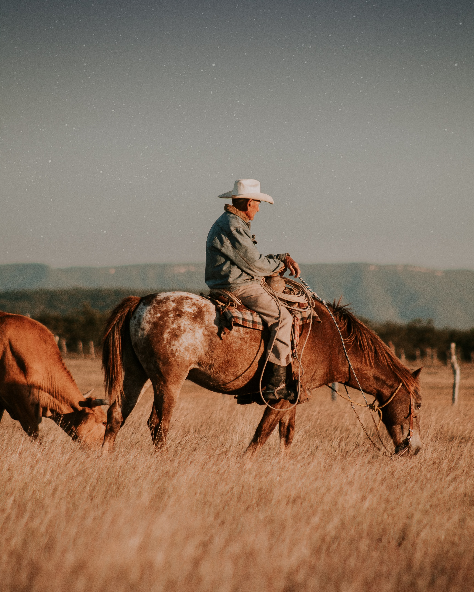

- 50 years old
- Married
- Father of two girls, one in high school and one a freshman in college.
- Has a Bachelors in Agronomy
- Household income is 75K

- 34 years old
- Married
- Mother of 4 kids
- Has her highschool diploma
- Household income is 50K
In Fish Haven the median age is 53. 90.3% of adults are married, 44.6% is female, and 96.2% are white. In Preston there is a population of 5.31K people. Of those, 86.2% are white, the median income is $48,113.00, and the average age is 38. Soda Springs' population is 95.68% are white, 52.83% female and the median age is 34. There are 2000 adults and of those 439 are seniors.
| Persona | Photo | Fictional Name | Job title | Demographics | Goals | Environment | Quote |
|---|---|---|---|---|---|---|---|
| Farmer |  | Scott Griffith | Horse Trainer |
|
He is a hard-working country man. He is concerned about getting the job done, spending time with his family, and keeping a budget. He spends his mornings working hard he wants to go relax in the evenings. He needs a platform to announce his horse shows. | He uses more technology than his father did. He is comfortable with new technology and knows that using the web will be the best way to announce his shows and get more business. | "Work hard, play hard." |
| Restaurant Supervisor | |
Sarah Lopez | Mother and worker |
|
She is a loving mother, but is very busy. She wants to a place to check on outings with her family. | She uses technology all the time. She spends her free time on her phone. She likes being up to date on technology. She emails teachers. She uses web pages to set up child care. Her goals include ways to save time. | "Let's go find something to do." |
Scott will check the site during office hours. On his desktop. He wants to find his desired city quickly. He'll check for similar horse shows in the area and the dates. He'll want to know the forecasted weather and check how many people visit the site. Learn what his options are to make a post.
Sarah will ask what's going on this weekend. She'll access the site from her phone. She will ask if there is a way to save events to her calendar.